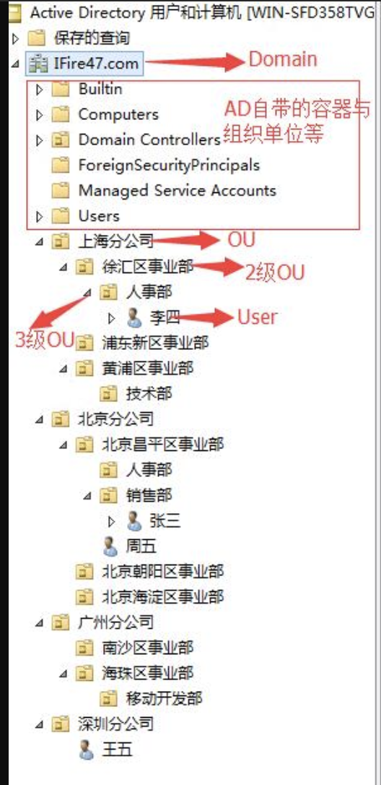

1 (Data transfer pricing)
C. Using private IP address will make transfer within the same AZ free. No impact on across-AZ transfer.

Data transfer cost
Data transferred between EC2 instances or containers, or Elastic Network Interfaces in the same availability zone and same VPC via public or Elastic IPv4 addresses are charged at $0.01 per GB for egress traffic and $0.01 per GB for ingress traffic.
Data transferred between EC2 instances or containers, or Elastic Network Interfaces in the same availability zone and same VPC over private IPv4 or IPv6 addresses are free.


Data transferred between EC2 instances or containers, or Elastic Network Interfaces across availability zones or VPC peering connections via public, private or Elastic IPv4, or IPv6 addresses is charged at $0.01 per GB for egress traffic and $0.01 per GB for ingress traffic.
Free transfer in: Internet -> AWS regions
Data transfer into all AWS regions from the Internet is free.
Charged transfer out: AWS regions -> Internet
Data transfer out to the Internet from all AWS regions is billed at region-specific, tiered data transfer rates.
Charged across regions: AWS Region -> Another AWS Region
Data transfer out from the local AWS region to another AWS region is charged at source region-specific data transfer rates. These costs are typically labeled as InterRegion Inbound or InterRegion Outbound transfer type in the monthly AWS bills.
Data transfer via: On site -> AWS Region free, AWS->site charged
AWS Direct Connect is an AWS network service that provides an alternative to using the Internet to connect customer’s on-premise sites to AWS. Customers connect their pre-existing data center or office network to AWS via an AWS Direct Connect location.
Data transfer into AWS regions through AWS Direct Connect locations is free.
Data transfer out of AWS regions through AWS Direct Connect is charged.

Services with free transfer within same region
Data transferred between services in the same AWS Region is free
- Amazon S3, Amazon Glacier,
- Amazon DynamoDB,
- Amazon SES, Amazon SQS,
- Amazon Kinesis,
- Amazon ECR,
- Amazon SNS or
- Amazon SimpleDB and
- Amazon EC2
Data transferred “in” to and “out” from Amazon Classic and Application Elastic Load Balancers using private IP addresses, between EC2 instances and the load balancer in the same AWS Region is free.
Services with a charge across availability zones
Data transferred “in” to and “out” from
- Amazon EC2,
- Amazon RDS,
- Amazon Redshift,
- Amazon DynamoDB Accelerator (DAX), and
- Amazon ElastiCache instances or
- Elastic Network Interfaces
across Availability Zones or VPC Peering connections in the same AWS Region is charged at $0.01/GB in each direction.
Data transferred between
- Amazon EC2,
- Amazon RDS,
- Amazon Redshift,
- Amazon ElastiCache instances and
- Elastic Network Interfaces
in the same Availability Zone is free.
S3 Data Transfer Cost
Free for:
- Transfer into S3
- Transfer out from Amazon S3 to Amazon CloudFront
- Data transferred out to an Amazon Elastic Compute Cloud (Amazon EC2) instance, when the instance is in the same AWS Region as the S3 bucket.
Charges for:
- PUT, COPY, POST, LIST, GET requests
- Storage, per GB per month
- Transfer across region
Edge location data transfer
Data transfer out of AWS edge locations to the Internet is billed at region-specific, tiered data transfer rates.
Into edge location is free.
App Mesh
Application-level networking for all your services.
AWS App Mesh is a service mesh that provides application-level networking to make it easy for your services to communicate with each other across multiple types of compute infrastructure. App Mesh standardizes how your services communicate, giving you end-to-end visibility and ensuring high-availability for your applications.
2: S3 Versioning/MFA Deletion
B. With versioning, you can easily recover from both unintended user actions and application failures.
S3 Versioning
When you enable versioning for a bucket, if Amazon S3 receives multiple write requests for the same object simultaneously, it stores all of the objects.
If you enable versioning for a bucket, Amazon S3 automatically generates a unique version ID for the object being stored. In one bucket, for example, you can have two objects with the same key, but different version IDs, such as photo.gif (version 111111) and photo.gif (version 121212).
S3 MFA Deletion
Needs to have versioning enabled.
Applies to a bucket.
3 (ALB Dynamic Port Mapping)
Dynamic Port Mapping
- The Classic Load Balancer doesn’t allow you to run multiple copies of a task on the same instance. Instead, with the Classic Load Balancer, you must statically map port numbers on a container instance.
- However, an Application Load Balancer uses dynamic port mapping, so you can run multiple tasks from a single service on the same container instance.
This image from this blog relly helps:

Path-based routing
You can create a listener with rules to forward requests based on the URL path. This is known as path-based routing. If you are running microservices, you can route traffic to multiple back-end services using path-based routing. For example, you can route general requests to one target group and requests to render images to another target group.
4 (ELB and ASG)
CLB Connection Draining (in NLB and ALB, deregistration delay)
- In order to provide a first-class use experience, you’d like to avoid breaking open network connections while taking an instance out of service, updating its software, or replacing it with a fresh instance that contains updated software.
- Connection Draining is enabled by default for load balancers that are created using the Console.
- When Connection Draining is enabled and configured, the process of deregistering an instance from an Elastic Load Balancer gains an additional step.
- For the duration of the configured timeout, the load balancer will allow existing, in-flight requests made to an instance to complete, but it will not send any new requests to the instance.
- During this time, the API will report the status of the instance as
InService, along with a message stating that “Instance deregistration currently in progress.” Once the timeout is reached, any remaining connections will be forcibly closed.

Scaling cooldowns for Amazon EC2 Auto Scaling
- A scaling cooldown helps you prevent your Auto Scaling group from launching or terminating additional instances before the effects of previous activities are visible.
- By default, all simple scaling policies use the default cooldown period associated with your Auto Scaling group, but you can configure a different cooldown period for certain policies, as described in the following sections.
- When you use simple scaling, after the Auto Scaling group scales using a simple scaling policy, it waits for a cooldown period to complete before any further scaling activities due to simple scaling policies can start.
- An adequate cooldown period helps to prevent the initiation of an additional scaling activity based on stale metrics.
Target Group Deregistration delay
- Elastic Load Balancing stops sending requests to targets that are deregistering.
- By default, Elastic Load Balancing waits 300 seconds before completing the deregistration process, which can help in-flight requests to the target to complete.
- The initial state of a deregistering target is
draining. After the deregistration delay elapses, the deregistration process completes and the state of the target isunused. If the target is part of an Auto Scaling group, it can be terminated and replaced.
ALB Target Group Sticky sessions
- Sticky sessions are a mechanism to route requests to the same target in a target group. This is useful for servers that maintain state information in order to provide a continuous experience to clients. To use sticky sessions, the clients must support cookies.
- If you enable sticky sessions, this overrides the routing algorithm of the target group after the initial target selection.
- If you are using multiple layers of Application Load Balancers, you can enable sticky sessions on one layer only, because the load balancers would use the same cookie name.
- WebSockets connections are inherently sticky. If the client requests a connection upgrade to WebSockets, the target that returns an HTTP 101 status code to accept the connection upgrade is the target used in the WebSockets connection. After the WebSockets upgrade is complete, cookie-based stickiness is not used.
- You enable sticky sessions at the target group level. You can also set the duration for the stickiness of the load balancer-generated cookie, in seconds.
- The duration is set with each request. Therefore, if the client sends a request before each duration period expires, the sticky session continues.
Answer to this question
B. Enable Connection Draining on the ALB.
- Connection Draining: Happens when ASG scales in. It is an attribute of ELB.
- Deregistration Delay: Happens when a target is deregistered from a target group. It is an attribute of a target group.
5 (KMS)
Cryptographic Keys on KMS
AWS Key Management Service (AWS KMS) provides cryptographic keys and operations secured by FIPS 140-2 certified hardware security modules (HSMs) scaled for the cloud.
KMS Customer Master Key
- Customer master keys are the primary resources in AWS KMS.
- A customer master key (CMK) is a logical representation of a master key.
- The CMK includes metadata, such as the key ID, creation date, description, and key state.
- The CMK also contains the key material used to encrypt and decrypt data.
- CMKs are created in AWS KMS. Symmetric CMKs and the private keys of asymmetric CMKs never leave AWS KMS unencrypted.
Security of KMS
- AWS KMS is designed so that no one, including AWS employees, can retrieve your plaintext CMKs from the service.
- All CMKs regardless of their creation date or origin are automatically protected using HSMs that have been validated under FIPS 140-2, or are in the process of being validated. No action is required on your part to use the FIPS 140-2 validated HSMs.
You cannot export a key from KMS
CMKs are created and used only within the service to:
- help ensure their security,
- enable your policies to be consistently enforced,
- provide a centralized log of their use.
AWS KMS requests logging in CloudTrail
Logs in AWS CloudTrail will show all AWS KMS API requests, including both management requests (e.g. create, rotate, disable, policy edits) and cryptographic requests (e.g. encrypt/decrypt). Turn on AWS CloudTrail in your account to view these logs.
KMS v.s. CloudHSM
- AWS Key Management Service (KMS) is a multi-tenant, managed service that allows you to use and manage encryption keys.
- AWS CloudHSM provides a dedicated, FIPS 140-2 Level 3 HSM under your exclusive control, directly in your Amazon Virtual Private Cloud (VPC).
=> You choose CloudHSM when you need an isolated hardware module to comply to FIPS 140-2 Level 3.
Envelope Encryption
- AWS KMS facilitates a Two-tiered envelope encryption operational model using Master Key (Customer Managed Key or AWS Managed Key – Default Key) and Data Keys.
- AWS KMS helps you to protect your master keys by storing and managing them securely. Master keys stored in AWS KMS, known as customer master keys (CMKs), never leave the AWS KMS FIPS validated hardware security modules unencrypted. To use an AWS KMS CMK, you must call AWS KMS.
6 (Firewall Services)
AWS Firewall Manager
AWS Firewall Manager is a security management service which allows you to centrally configure and manage firewall rules across your accounts and applications in AWS Organization.
- Using AWS Firewall Manager, you can easily roll out AWS WAF rules for your Application Load Balancers, API Gateways, and Amazon CloudFront distributions.
- Similarly, you can create AWS Shield Advanced protections for your Application Load Balancers, ELB Classic Load Balancers, Elastic IP Addresses and CloudFront distributions.
- Finally, with AWS Firewall Manager, you can enable security groups for your Amazon EC2 and ENI resource types in Amazon VPCs.
AWS WAF (Web Application Firewall)
- You can filter any part of the web request, such as IP addresses, HTTP headers, HTTP body, or URI strings.
- This allows you to block common attack patterns, such as SQL injection or cross-site scripting.
- AWS WAF is easy to deploy and protect applications deployed on either Amazon CloudFront as part of your CDN solution, the Application Load Balancer that fronts all your origin servers, or Amazon API Gateway for your APIs.
- With AWS Firewall Manager integration, you can centrally define and manage your rules, and reuse them across all the web applications that you need to protect.
- The pricing is based on how many rules you deploy and how many web requests your application receives. There are no upfront commitments.
AWS Shield
- When you use AWS Shield Standard with Amazon CloudFront and Amazon Route 53, you receive comprehensive availability protection against all known infrastructure (Layer 3 and 4) attacks.
- For higher levels of protection against attacks targeting your applications running on Amazon Elastic Compute Cloud (EC2), Elastic Load Balancing (ELB), Amazon CloudFront, AWS Global Accelerator and Amazon Route 53 resources, you can subscribe to AWS Shield Advanced.
- Free always-on AWS Shield Standard
- With AWS Shield Advanced, customers get AWS WAF and AWS Firewall Manager at no additional cost for usage on resources protected by AWS Shield Advanced.
- Additionally, you get “DDoS cost protection for scaling”, a feature that protects your AWS bill from usage spikes on your AWS Shield Advanced protected EC2, Elastic Load Balancing (ELB), Amazon CloudFront, AWS Global Accelerator, and Amazon Route 53 resources as a result of a DDoS attack.
7 (Spot Instance/Request Lifecycle)
You must first cancel a Spot Request, and then terminate the associated Spot Instances. See Spot instance lifecycle and requirements for details.
A one-time Spot Instance request remains active until Amazon EC2 launches the Spot Instance, the request expires, or you cancel the request. If the Spot price exceeds your maximum price or capacity is not available, your Spot Instance is terminated and the Spot Instance request is closed. Your one-time request will have already been inactive when you have the instance, so you can just terminate it.
A persistent Spot Instance request remains active until it expires or you cancel it, even if the request is fulfilled.
Cancelling a persistent spot instance request does not automatically terminate the spot instance.
8 (S3 lifecycle)
Keyword: Rarely accessed, need to be durable, available immediately upon request
9 (S3 performance)
Multipart Uploads
- When you upload large files to Amazon S3, it’s a best practice to leverage multipart uploads.
- If you’re using the AWS Command Line Interface (AWS CLI), all high-level aws s3 commands automatically perform a multipart upload when the object is large. These high-level commands include
aws s3 cpand awss3 sync. - Multipart upload allows you to upload a single object as a set of parts. Each part is a contiguous portion of the object’s data. You can upload these object parts independently and in any order. If transmission of any part fails, you can retransmit that part without affecting other parts.
- After all parts of your object are uploaded, Amazon S3 assembles these parts and creates the object.
- In general, when your object size reaches 100 MB, you should consider using multipart uploads instead of uploading the object in a single operation.
- Multipart uploading is a three-step process:
- You initiate the upload,
- you upload the object parts,
- after you have uploaded all the parts, you complete the multipart upload.
- Upon receiving the complete multipart upload request, Amazon S3 constructs the object from the uploaded parts, and you can then access the object just as you would any other object in your bucket.
- When uploading a part, in addition to the upload ID, you must specify a part number. You can choose any part number between 1 and 10,000. A part number uniquely identifies a part and its position in the object you are uploading.
AWS CLI S3 upload: high/low level
You can upload large files to Amazon S3 using the AWS CLI with either aws s3 commands (high level) or aws s3api commands (low level).
- The recommended method is to use aws s3 commands (such as aws s3 cp) for multipart uploads and downloads, because these aws s3 commands automatically perform multipart uploading and downloading based on the file size.
- By comparison, aws s3api commands, such as aws s3api create-multipart-upload, should be used only when aws s3 commands don’t support a specific upload need, such as when the multipart upload involves multiple servers, a multipart upload is manually stopped and resumed later, or when the aws s3 command doesn’t support a required request parameter.
AWS S3 console
- The maximum size of a file that you can upload by using the Amazon S3 console is 160 GB.
- To upload a file larger than 160 GB, use the AWS CLI, AWS SDK, or Amazon S3 REST API.
- You specify storage class per object.
- A per-object monitoring/automation fee applies for Intelligent-Tiering
- A per-GB retrieval fee applies for Standard-IA, One Zone-IA, Glacier, Glacier Deep Archive.
The answer
The answer here is therefore b: aws s3 cp command. Using the high-level command automatically takes care of multi-part upload based on file size.
10 (AWS FSx for Windows File Server)
Amazon FSx for Windows File Server
- Amazon FSx for Windows File Server provides fully managed, highly reliable, and scalable file storage that is accessible over the industry-standard Server Message Block (SMB) protocol.
- It is built on Windows Server, delivering a wide range of administrative features such as user quotas, end-user file restore, and Microsoft Active Directory (AD) integration.
- It offers single-AZ and multi-AZ deployment options, fully managed backups, and encryption of data at rest and in transit.
- Amazon FSx file storage is accessible from Windows, Linux, and MacOS compute instances and devices running on AWS or on premises.
Choosing between EFS and FSx
- The particular scenarios for each primarily differ in how much the applications rely upon native Windows features, as opposed to being able to operate with a generic, OS-agnostic network file system.
- Because FSx runs on Windows, it is compatible with any server application designed for on-premises Windows Server environments.
- Applications that require Windows-specific features will do better with FSx.
- EFS is better for applications designed for heterogeneous environments and those that run on Linux system.
- Key attribute of EFS is that it uses NFS, one of the first network file sharing protocols native to Unix and Linux.
- EFS is more expensive
- Both support encryption in transit/at rest
- Both support on-promise and cloud access
- 2012 Windows Server update + later implementations of SMB include features that are not available on most NFS implementations, including EFS:
- end-to-end data encryption,
- remote direct memory access support,
- VSS snapshot backups,
- support for Windows New Technology File System (NTFS) metadata
- Active Directory (AD) security policies
The answer
B. An Amazon FSx for Windows File Server file system joined to the existing AD Domain
11 (SQS vs Kinesis)
SQS FIFO queue
- FIFO (First-In-First-Out) queues are designed to enhance messaging between applications when the order of operations and events is critical, or where duplicates can’t be tolerated
- FIFO queues also provide exactly-once processing but have a limited number of transactions per second (TPS): up to 3,000 messages per second with batching, or up to 300 messages per second (300 send, receive, or delete operations per second) without batching.
- The order in which messages are sent and received is strictly preserved and a message is delivered once and remains available until a consumer processes and deletes it.
- Duplicates aren’t introduced into the queue.
Amazon Kinesis
When you need real-time consider Kinesis.
Data Streams
Pay per shard, data persists after consuming
Kinesis Data Firehose
Pay per data, data disappears right after processing
Kinesis Data Stream v.s. SQS
- Amazon Kinesis Data Streams enables real-time processing of streaming big data.
- It provides ordering of records, as well as the ability to read and/or replay records in the same order to multiple Amazon Kinesis Applications.
- The Amazon Kinesis Client Library (KCL) delivers all records for a given partition key to the same record processor, making it easier to build multiple applications reading from the same Amazon Kinesis data stream (for example, to perform counting, aggregation, and filtering).
- Amazon Simple Queue Service (Amazon SQS) offers a reliable, highly scalable hosted queue for storing messages as they travel between computers.
- Amazon SQS lets you easily move data between distributed application components and helps you build applications in which messages are processed independently (with message-level ack/fail semantics), such as automated workflows.
Amazon Kinesis Data Streams Recommended User Case
- Routing related records to the same record processor (as in streaming MapReduce). For example, counting and aggregation are simpler when all records for a given key are routed to the same record processor.
- Ordering of records. For example, you want to transfer log data from the application host to the processing/archival host while maintaining the order of log statements.
- Ability for multiple applications to consume the same stream concurrently. For example, you have one application that updates a real-time dashboard and another that archives data to Amazon Redshift. You want both applications to consume data from the same stream concurrently and independently.
- Ability to consume records in the same order a few hours later. For example, you have a billing application and an audit application that runs a few hours behind the billing application.
- Because Amazon Kinesis Data Streams stores data for up to 7 days, you can run the audit application up to 7 days behind the billing application.
Amazon SQS Recommended User Case
- Messaging semantics (such as message-level ack/fail) and visibility timeout.
- For example, you have a queue of work items and want to track the successful completion of each item independently.
- Amazon SQS tracks the ack/fail (消息容错机制), so the application does not have to maintain a persistent checkpoint/cursor.
- Amazon SQS will delete acked messages and redeliver failed messages after a configured visibility timeout.
- Individual message delay. For example, you have a job queue and need to schedule individual jobs with a delay. With Amazon SQS, you can configure individual messages to have a delay of up to 15 minutes.
- Dynamically increasing concurrency/throughput at read time. For example, you have a work queue and want to add more readers until the backlog is cleared.
- With Amazon Kinesis Data Streams, you can scale up to a sufficient number of shards (note, however, that you’ll need to provision enough shards ahead of time).
- Leveraging Amazon SQS’s ability to scale transparently. For example, you buffer requests and the load changes as a result of occasional load spikes or the natural growth of your business. Because each buffered request can be processed independently, Amazon SQS can scale transparently to handle the load without any provisioning instructions from you.
BMW car-as-a-sensor Service with SQS
BMW built its new car-as-a-sensor (CARASSO) service in only six months leveraging Amazon Simple Storage Service (Amazon S3), Amazon Simple Queue Service (Amazon SQS), Amazon DynamoDB, Amazon Relational Database Service (Amazon RDS), and AWS Elastic Beanstalk.
Kinesis Data Streams concepts
Shard
Shard is the base throughput unit of an Amazon Kinesis data stream. One shard provides a capacity of 1MB/sec data input and 2MB/sec data output. One shard can support up to 1000 PUT records per second. You will specify the number of shards needed when you create a data stream. (While SQS can scale in the fly)
Record
A record is the unit of data stored in an Amazon Kinesis data stream. A record is composed of a sequence number, partition key, and data blob. Data blob is the data of interest your data producer adds to a data stream. The maximum size of a data blob (the data payload before Base64-encoding) is 1 megabyte (MB)8.
Partition key
Partition key is used to segregate and route records to different shards of a data stream. A partition key is specified by your data producer while adding data to an Amazon Kinesis data stream.
Kinesis is not so good at scalability
- Kinesis is less helpful than SNS and SQS in scaling.
- A Kinesis Stream’s scale relates to the number of “shards” it has. More shards, more scale. Each shard has a limit of 1 MiB and 1,000 messages per second.
- So, if the expected throughput is 9,500 messages per second, you can confidently provision ten shards to avoid a bottleneck. However, if the throughput is likely to change, the number of shards required must change with it.
SQS is not suited for multiple consumers
Because SQS is a queuing service (not a streaming service), it is not suited to multiple consumers. It is specially designed for “once only” delivery.
By contrary, Kinesis Data Streams supports up to 20 discrete consumers per stream (using enhanced fan-out)
Reliability: Ensure messages eventually gets processed
Kinesis Data Streams
- Kinesis is a stream, not a queue. Once a message has been successfully processed, it remains on the stream. The message is not deleted.
- Because Kinesis retains all messages, regardless of their successfully processed status, it offers an option which neither SQS or SNS offers — replay.
SQS
- Very reliable, With visibility time-out and re-deliver. No “Replay” option.
The Answer
The answer is therefore D. SQS FIFO queue de-duplicates messages.
12 (AWS Cognito)

Active Directory: Enterprise Identify Provider
- Microsoft Active Directory is a collection of services that help you manage users and devices on a network.
- Microsoft Active Directory is used by Windows applications to manage access and enable single sign-on (SSO).
Active Directory（活动目录）是微软Windows Server中，负责架构中大型网路环境的集中式目录管理服务（Directory Services），Windows 2000 Server开始内建于Windows Server产品中，它处理了在组织中的网路物件，物件可以是 计算机，用户，群组，组织单元（OU） 等等，只要是在Active Directory结构定义档（schema）中定义的物件，就可以储存在Active Directory资料档中，并利用Active Directory Service Interface来存取。
用户服务
管理用户的域账号、用户信息、企业通信录（与电子邮箱系统集成）、用户组管理、用户身份认证、用户授权管理、按需实施组管理策略等。这里不单单指某些线上的应用更多的是指真实的计算机，服务器等。
计算机管理
管理服务器及客户端计算机账户、所有服务器及客户端计算机加入域管理并按需实施组策略。
资源管理
管理打印机、文件共享服务、网络资源等实施组策略。
应用系统的支持
对于电子邮件（Exchange）、在线及时通讯（Lync）、企业信息管理（SharePoint）、微软CRM,ERP等业务系统提供数据认证（身份认证、数据集成、组织规则等）。这里不单是微软产品的集成，其它的业务系统根据公用接口的方式一样可以嵌入进来。
客户端桌面管理
系统管理员可以集中的配置各种桌面配置策略，如：用户适用域中资源权限限制、界面功能的限制、应用程序执行特征的限制、网络连接限制、安全配置限制等。
Amazon Cognito
Amazon Cognito User Pools
- Fully managed service
- User directory that scales up to hundreds of millions of users
Social and Enterprise identify federation
With Amazon Cognito, your users can sign in through:
- Social identity providers such as Google, Facebook, and Amazon,
- Enterprise identity providers such as Microsoft Active Directory via SAML.
The answer: Cognito
Key words:
- Internal and external users (rules out IAM and AD)
- One central source (Cognito user pools, support social and enterprise identify federation, including AD)
- Mobile web application (AD is for SSO on Windows applications)
13 (DynamoDB Accelerator)
DynamoDB Accelerator
- Amazon DynamoDB Accelerator (DAX) is a fully managed, highly available, in-memory cache for Amazon DynamoDB that delivers up to a 10 times performance improvement—from milliseconds to microseconds—even at millions of requests per second.
- DAX does all the heavy lifting required to add in-memory acceleration to your DynamoDB tables, without requiring developers to manage cache invalidation, data population, or cluster management.
S3 Transfer Acceleration
- Amazon S3 Transfer Acceleration enables fast, easy, and secure transfers of files over long distances between your client and an S3 bucket.
- Bucket level feature (S3 classes apply to objects. Versioning and MFA delete are both bucket level).
- Both to and from your bucket.
- Transfer Acceleration takes advantage of Amazon CloudFront’s globally distributed edge locations.
- As the data arrives at an edge location, data is routed to Amazon S3 over an optimized network path.
The answer: DynamoDB with DynamoDB Accelerator
Key words:
- Key-value model
- Microsecond
- Scale
14 (VPC and SG best practices)
API Gateway private integrations
- With the API Gateway private integration, you can enable access to HTTP/HTTPS resources within a VPC without detailed knowledge of private network configurations or technology-specific appliances.
- The private integration uses an API Gateway resource of
VpcLinkto encapsulate connections between API Gateway and targeted VPC resources. - As an owner of a VPC resource, you are responsible for creating a Network Load Balancer in your VPC and adding a VPC resource as a target of a Network Load Balancer’s listener.
- As an API developer, to set up an API with the private integration, you are responsible for creating a
VpcLinktargeting the specified Network Load Balancer and then treating theVpcLinkas an effective integration endpoint.
The answer
B, D
Key word:
- web tier needs to be accessible from the Internet using HTTPS -> B
- most secure: don’t want to expose application tier unnecessarily
15 (VPC security practices)
The answer
A, E
Key words:
- only accessible from the application tier -> E
- cannot be accessible from the Internet -> A. Only private subnets in the RDS’s subnet group.
16 (Serverless, Microservices)
The answer: B
Keyword:
- Without the operational overhead of managing infrastructure
- scale quickly
17 (Target Tracing Auto Scaling)
EC2 Auto Scaling based on Amazon SQS
SQS Queue attributes
ApproximateNumberOfMessages – Returns the approximate number of messages available for retrieval from the queue.
Using target tracking with the right metric
If you use a target tracking scaling policy based on a custom Amazon SQS queue metric, dynamic scaling can adjust to the demand curve of your application more effectively. You have to configure this target tracking scaling policy from SDK or CLI. Only four pre-defined metrics are available from Console.
- You should use a backlog per instance metric with the target value being the acceptable backlog per instance to maintain. You can calculate these numbers as follows:
- Backlog per instance: To calculate your backlog per instance, start with the
ApproximateNumberOfMessagesqueue attribute to determine the length of the SQS queue (number of messages available for retrieval from the queue). Divide that number by the fleet’s running capacity, which for an Auto Scaling group is the number of instances in theInServicestate, to get the backlog per instance. - Acceptable backlog per instance: To calculate your target value, first determine what your application can accept in terms of latency. Then, take the acceptable latency value and divide it by the average time that an EC2 instance takes to process a message.
- Backlog per instance: To calculate your backlog per instance, start with the
- You then create a target tracking policy that configures your Auto Scaling group to scale based on the custom metric and a set target value.
Auto Scaling Policies
You can optionally add scaling policies if you want to adjust the size (number of instances) of your group automatically.
A scaling policy is a set of instructions for making such adjustments in response to an Amazon CloudWatch alarm that you assign to it.
Target Tracking Scaling
We strongly recommend that you use a target tracking scaling policy to scale on a metric.
How to configure Target Tracking
- With target tracking scaling policies, you select a scaling metric and set a target value.
- Amazon EC2 Auto Scaling creates and manages the CloudWatch alarms that trigger the scaling policy and calculates the scaling adjustment based on the metric and the target value.
Limited available metrics on AWS Console
The following predefined metrics are available from AWS Console:
ASGAverageCPUUtilization—Average CPU utilization of the Auto Scaling group.ASGAverageNetworkIn—Average number of bytes received on all network interfaces by the Auto Scaling group.ASGAverageNetworkOut—Average number of bytes sent out on all network interfaces by the Auto Scaling group.ALBRequestCountPerTarget—Number of requests completed per target in an Application Load Balancer target group.
You can choose other available Amazon CloudWatch metrics or your own metrics in CloudWatch by specifying a customized metric. You must use the AWS CLI or an AWS SDK to create a target tracking policy with a customized metric.
Simple Scaling

Look for the “Wait for __ seconds before allowing another scaling activity”, which is the cool down period.
- Simple scaling—Increase or decrease the current capacity of the group based on a single scaling adjustment.
- The main issue with simple scaling is that after a scaling activity is started, the policy must wait for the scaling activity or health check replacement to complete and the cooldown period to expire before responding to additional alarms.
- Cooldown periods help to prevent the initiation of additional scaling activities before the effects of previous activities are visible.
Step Scaling
- Note there is no
cool-downsetting. If a new alarm in another threshold is triggered, the policy will start a new action. However, same alarm will not cause a new launching. By contrast, cool-down period means no scaling will happen at all.
ASG Warm up period (available for Step and Target Tracking scaling)
- With step scaling policies, you can specify the number of seconds that it takes for a newly launched instance to warm up.
- Until its specified warm-up time has expired, an instance is not counted toward the aggregated metrics of the Auto Scaling group. While scaling out, AWS also does not consider instances that are warming up as part of the current capacity of the group. Therefore, multiple alarm breaches that fall in the range of the same step adjustment result in a single scaling activity. This ensures that we don’t add more instances than you need.
- With step scaling the policy can continue to respond to additional alarms, even while a scaling activity or health check replacement is in progress. Therefore, all alarms that are breached are evaluated by Amazon EC2 Auto Scaling as it receives the alarm messages.
- In most cases, step scaling policies are a better choice than simple scaling policies, even if you have only a single scaling adjustment.
Load Balancer Slow Start v.s. ASG Instance Warm Up
ALB Slow Start
- Avoid over-flooding instance before its ready
- Linearly increase requests to the new target after it is registered.
ASG Instance Warm up
- Avoid launching more instances than you need
- Until the newly launched instance’s specified warm-up time has expired, an instance is not counted toward the aggregated metrics of the Auto Scaling group.
18 (Scalable and Available services)
AWS Fargate
- AWS Fargate is a serverless compute engine for containers that works with both Amazon Elastic Container Service (ECS) and Amazon Elastic Kubernetes Service (EKS).
- Fargate allocates the right amount of compute, eliminating the need to choose instances and scale cluster capacity.
- You only pay for the resources required to run your containers, so there is no over-provisioning and paying for additional servers.
- Fargate runs each task or pod in its own kernel providing the tasks and pods their own isolated compute environment. This enables your application to have workload isolation and improved security by design.
Aurora Serverless
- Amazon Aurora Serverless is an on-demand, auto-scaling configuration for Amazon Aurora (MySQL-compatible and PostgreSQL-compatible editions)
- The database will automatically start up, shut down, and scale capacity up or down based on your application’s needs.
- It’s a simple, cost-effective option for infrequent, intermittent, or unpredictable workloads.
The answer: serverless
- AWS Fargate for serverless application layer
- Aurora Serverless for database layer.
- Both highly available and cost-effective because you pay what you use.
19 (IAM best practice)
IAM Role Trust Policy
- A JSON policy document in which you define the principals that you trust to assume the role.
- You cannot use wildcard(*) for principles when you create a trust policy.
- A role trust policy is a required resource-based policy that is attached to a role in IAM (The role is the resource here).
- The principals that you can specify in the trust policy include users, roles, accounts, and services (The role is the principle here).
Permissions policy
A permissions document in JSON format in which you define what actions and resources the role can use. The document is written according to the rules of the IAM policy language.
Role chaining
- Role chaining occurs when you use a role to assume a second role through the AWS CLI or API.
- Role chaining limits your AWS CLI or AWS API role session to a maximum of one hour.
Delegation
- Delegation is the granting of permissions to someone to allow access to resources that you control.
- Delegation involves setting up a trust between two accounts.
- The first is the account that owns the resource (the trusting account).
- The second is the account that contains the users that need to access the resource (the trusted account).
- The trusted and trusting accounts can be any of the following:
- The same account.
- Separate accounts that are both under your organization’s control.
- Two accounts owned by different organizations.
- To delegate permission to access a resource, you create an IAM role in the trusting account that has two policies attached.
- The permissions policy grants the user of the role the needed permissions to carry out the intended tasks on the resource.
- The trust policy specifies which trusted account members are allowed to assume the role.
- The permissions policy grants the user of the role the needed permissions to carry out the intended tasks on the resource.
The answer: IAM role, Delegation
Role is assumable and can be claimed back after security group finishes their auditing. User is long-living.
20 (High Availability with multi-AZ)
The answer: D
21 - Storage Gateway
Storage Gateway
AWS Storage Gateway offers file-based, volume-based, and tape-based storage solutions:
File Gateway
File Gateway – A file gateway supports a file interface into Amazon Simple Storage Service (Amazon S3) and combines a service and a virtual software appliance.
- you can store and retrieve objects in Amazon S3 using industry-standard file protocols such as Network File System (NFS) and Server Message Block (SMB).
- A file gateway simplifies file storage in Amazon S3, integrates to existing applications through industry-standard file system protocols, and provides a cost-effective alternative to on-premises storage.
Volume Gateway
- A volume gateway provides cloud-backed storage volumes that you can mount as Internet Small Computer System Interface (iSCSI) devices from your on-premises application servers.
- The volume gateway is deployed into your on-premises environment as a VM running on VMware ESXi, KVM, or Microsoft Hyper-V hypervisor.
The gateway supports the following volume configurations:
- Cached volumes – You store your data in Amazon Simple Storage Service (Amazon S3) and retain a copy of frequently accessed data subsets locally. Cached volumes offer a substantial cost savings on primary storage and minimize the need to scale your storage on-premises. You also retain low-latency access to your frequently accessed data.
- Stored volumes – If you need low-latency access to your entire dataset, first configure your on-premises gateway to store all your data locally. Then asynchronously back up point-in-time snapshots of this data to Amazon S3. This configuration provides durable and inexpensive offsite backups that you can recover to your local data center or Amazon Elastic Compute Cloud (Amazon EC2). For example, if you need replacement capacity for disaster recovery, you can recover the backups to Amazon EC2.
Tape Gateway
A tape gateway provides cloud-backed virtual tape storage. The tape gateway is deployed into your on-premises environment as a VM running on VMware ESXi, KVM, or Microsoft Hyper-V hypervisor.
With a tape gateway, you can cost-effectively and durably archive backup data in GLACIER or DEEP_ARCHIVE. A tape gateway provides a virtual tape infrastructure (cold back-up).
22 - ENI
Elastic Network Interface
Every instance in a VPC has a default network interface, called the primary network interface. You cannot detach a primary network interface from an instance. You can create and attach additional network interfaces. The maximum number of network interfaces that you can use varies by instance type.
DHCP(Dynamic Host Configuration Protocol)
In computer science, the Dynamic Host Configuration Protocol is a network management protocol used on Internet Protocol networks, whereby a DHCP server dynamically assigns an IP address and other network configuration parameters to each device on the network, so they can communicate with other IP networks.
23 - SQS times
Long Polling
When the ReceiveMessageWaitTimeSeconds property of a queue is set to a value greater than zero, long polling is in effect.
- Long polling reduces the number of empty responses by allowing Amazon SQS to wait until a message is available before sending a response to a ReceiveMessage request.
- The maximum long polling wait time is 20 seconds.
- Long polling helps reduce the cost of using Amazon SQS by
- eliminating the number of empty responses (when there are no messages available for a ReceiveMessage request) and
- false empty responses (when messages are available but aren’t included in a response).
Differences between long and short polling
Short polling occurs when the WaitTimeSeconds parameter of a ReceiveMessage request is set to 0 in one of two ways:
- The ReceiveMessage call sets
WaitTimeSecondsto 0. - The ReceiveMessage call doesn’t set WaitTimeSeconds, but the queue attribute
ReceiveMessageWaitTimeSecondsis set to 0.
Message Retention Period
Amazon SQS automatically deletes messages that have been in a queue for more than maximum message retention period. The default message retention period is 4 days. However, you can set the message retention period to a value from 60 seconds to 1,209,600 seconds (14 days) using the SetQueueAttributes action.
Dead Letter Queue
Amazon SQS supports dead-letter queues, which other queues (source queues) can target for messages that can’t be processed (consumed) successfully. Dead-letter queues are useful for debugging your application or messaging system because they let you isolate problematic messages to determine why their processing doesn’t succeed.
You exercise control over the Dead Letter Queue using a Redrive Policy, which contains two values:
- Maximum Receives – The maximum number of times that a message can be received by consumers. When this value is exceeded for a message the message will be automatically sent to the Dead Letter Queue.
- Dead Letter Queue – The ARN (Amazon Resource Name) of an SQS queue that will receive the messages which were not successfully processed after maximum number of receives by consumers.
Visibility Timeout
- When a consumer receives and processes a message from a queue, the message remains in the queue. Amazon SQS doesn’t automatically delete the message. The consumer must delete the message from the queue after receiving and processing it.
- Immediately after a message is received, it remains in the queue. To prevent other consumers from processing the message again, Amazon SQS sets a visibility timeout, a period of time during which Amazon SQS prevents other consumers from receiving and processing the message.
- The default visibility timeout for a message is 30 seconds. The minimum is 0 seconds. The maximum is 12 hours.
GuardDuty
- Amazon GuardDuty is a threat detection service that continuously monitors for malicious activity and unauthorized behavior to protect your AWS accounts, workloads, and data stored in Amazon
- GuardDuty analyzes tens of events across multiple AWS data sources, such as AWS CloudTrail event logs, Amazon VPC Flow Logs, and DNS logs.
- By integrating with Amazon CloudWatch Events, GuardDuty alerts are actionable, easy to aggregate across multiple accounts, and straightforward to push into existing event management and workflow systems.
Cancelling Spot instance request
If you no longer want your Spot Instance request, you can cancel it. You can only cancel Spot Instance requests that are open, active, or disabled.
- Your Spot Instance request is open when your request has not yet been fulfilled and no instances have been launched.
- Your Spot Instance request is active when your request has been fulfilled and Spot Instances have launched as a result.
- Your Spot Instance request is disabled when you stop your Spot Instance.
If your Spot Instance request is active and has an associated running Spot Instance, canceling the request does not terminate the instance.
If your Spot Instance request is active and has an associated running Spot Instance, or your Spot Instance request is disabled and has an associated stopped Spot Instance, canceling the request does not terminate the instance; you must terminate the running Spot Instance manually.
If you terminate a running or stopped Spot Instance that was launched by a persistent Spot request, the Spot request returns to the open state so that a new Spot Instance can be launched. To cancel a persistent Spot request and terminate its Spot Instances, you must cancel the Spot request first and then terminate the Spot Instances. Otherwise, the persistent Spot request can launch a new instance.
Stop/Start spot instance
The feature of stopping a persistent is available for persistent Spot requests.
- You will not be charged for instance usage while your instance is stopped.
- EBS volume storage is charged at standard rates.
Upon restart, the EBS root device is restored from its prior state, previously attached data volumes are reattached, and the instance retains its instance ID.
Spot Instance interruptions
You can specify that Amazon EC2 should do one of the following when it interrupts a Spot Instance:
- Stop the Spot Instance
- Hibernate the Spot Instance
- Terminate the Spot Instance
The default is to terminate Spot Instances when they are interrupted. To change the interruption behavior, see Specifying the interruption behavior.